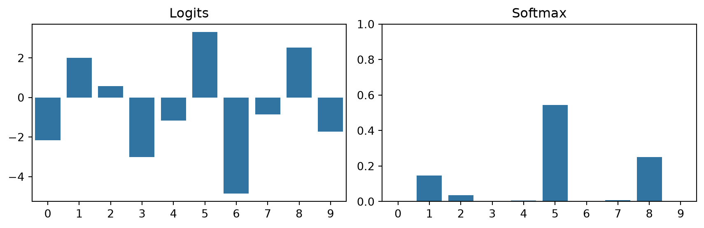
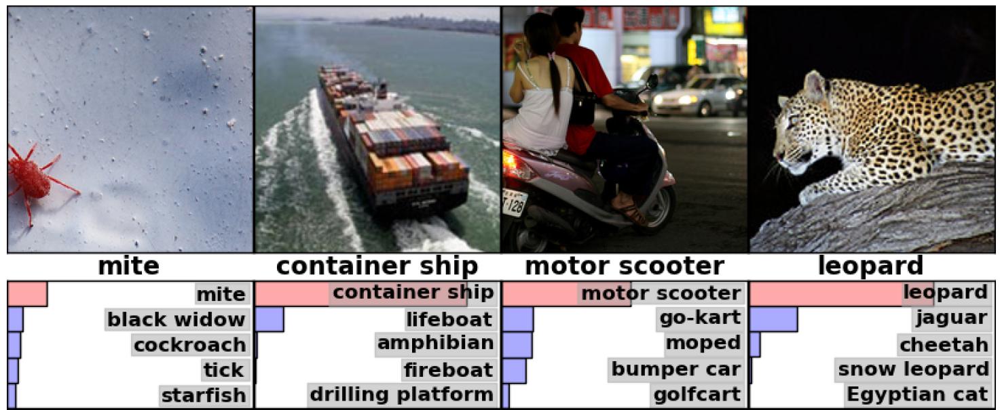
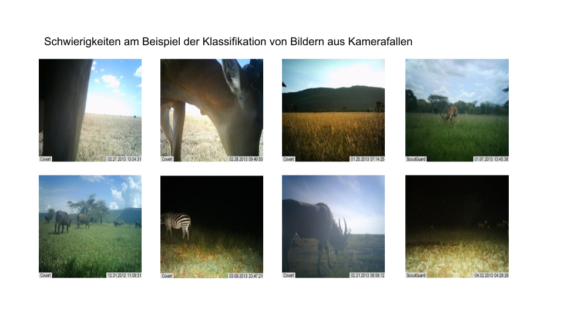
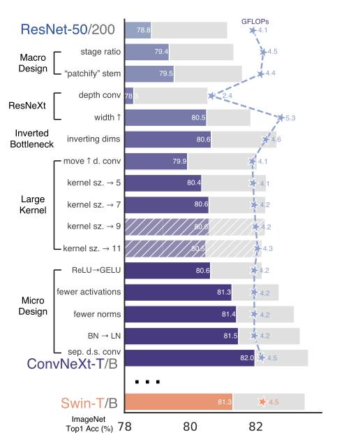

4 - Image Classification
TipLearning Objectives
After this lecture you should be able to:
- Define classification variants (multi-class, binary, multi-label) and identify which applies to a given task.
- Explain the role of the softmax function in converting logits to class probabilities.
- Describe cross-entropy loss on a high-level and explain why it penalizes confident wrong predictions.
- Apply transfer learning and explain when to freeze layers vs. fine-tune.
- Select appropriate data augmentation strategies for a given dataset.
- Describe a systematic training recipe and interpret training vs. validation curves.
TipTLDR Recap
Image Classification
- Assign images to predefined classes: multi-class (\(> 2\) classes), binary (2 classes), multi-label (multiple labels from one shared set), or multi-task (multiple separate label sets, one head per task)
- Output: class probabilities via a softmax function applied to raw model outputs (logits)
Softmax: Logits to Probabilities
\[P(Y = k \mid X = \mathbf{x}) = \frac{e^{z_k}}{\sum_{j=1}^K e^{z_j}}\]
- Logits \(\mathbf{z}\): raw, unbounded model outputs
- Softmax: converts logits to a valid probability distribution (sums to 1, all values in \([0, 1]\))
Cross-Entropy Loss
\[CE = -\sum_{j=1}^K y_j \log \hat{y}_j\]
- Measures how well predicted probabilities \(\hat{\mathbf{y}}\) match the true distribution \(\mathbf{y}\)
- Penalizes confident wrong predictions heavily; loss approaches 0 when the model is correct and confident
- Equivalent to the negative log-likelihood under a maximum likelihood framework
Architecture: ResNet as Default
- Residual connections: \(\mathbf{x}_{l+1} = \mathbf{x}_l + F(\mathbf{x}_l)\) — learn the change, not the full transformation
- Enable training of very deep networks (\(>100\) layers) by smoothing the loss landscape
- Progression: AlexNet (2012) \(\rightarrow\) VGG (2014) \(\rightarrow\) ResNet (2015) \(\rightarrow\) ConvNeXt (2022)
- Practical advice: use proven architectures (ResNet-50, EfficientNet, ConvNeXt) rather than designing custom ones
Training in Practice
- Follow a systematic recipe: know the data \(\rightarrow\) set baselines \(\rightarrow\) overfit \(\rightarrow\) regularize \(\rightarrow\) tune \(\rightarrow\) squeeze
- Data augmentation generates training variety (flips, crops, color jitter) without collecting new data
- Monitor training and validation curves to detect overfitting
- Transfer learning is the practical default: start from a pre-trained backbone, fine-tune for the target task
1 The Classification Task
Image classification is one of the foundational tasks in computer vision: given an image, assign it to one of a predefined set of categories. It is the task that sparked the deep learning revolution when Krizhevsky et al. (2012) demonstrated that CNNs could dramatically outperform classical methods on ImageNet.
There are several variants of image classification:
- Multi-class classification: each image is assigned to exactly one of \(K > 2\) classes (e.g., species identification)
- Binary classification: a special case with \(K = 2\) classes (e.g., “animal present” vs. “empty”)
- Multi-label classification: each image can carry multiple labels from the same label set (e.g., “deer” and “bird” are both present in one image)
- Multi-task classification: one image is classified across multiple separate label sets with different semantics (e.g., a species label and a behavior label and a time-of-day label — each is its own independent classification head)
The distinction between multi-label and multi-task matters in practice. In multi-label classification there is a single shared label set and the model must decide which subset of labels applies; a single sigmoid output per class is typically used. In multi-task classification the label sets are semantically distinct: each task has its own output head and its own loss, and the network shares a common backbone. A camera-trap model that predicts species, behavior, and group size simultaneously is multi-task, not multi-label.
| Property | Multi-label | Multi-task |
|---|---|---|
| Label sets | One shared set | Multiple separate sets |
| Example outputs | deer ✓, bird ✓, fox ✗ | species: deer / behavior: grazing / time: day |
| Output head | Single head, sigmoid per class | One head per task |
| Loss | Binary cross-entropy per class | Sum of per-task losses |
Figure 1 illustrates the four classification task variants side-by-side.

Figure 2 illustrates a multi-class classification task.

Figure 3 shows an example from the paper by Krizhevsky et al. (2012), which achieved the best results in the 2012 ImageNet competition, demonstrating how well CNNs work. Note that each image had to be assigned to one of 1’000 classes.

Figure 4 illustrates the challenge with images taken by camera traps, which need to be classified along animal species.

2 Modelling Classification
2.1 Softmax Classifier
In a parametric approach, we seek a model of the following form:
\[ \hat{y}^{(i)} = f(\theta, \mathbf{x}^{(i)}) \]
We want to find model parameters \(\theta\) that output a score/prediction \(\hat{y}^{(i)}\) for any data points \(\mathbf{x}^{(i)}\) for each class \(k \in K\). We then want to assess how good this score is with the help of a loss function.
Note: The model parameters \(\theta\) are all the learnable parameters of a model, e.g. the filters of the convolutional layers.
With a softmax classifier, we interpret model predictions/scores as probabilities of class memberships: \(P(Y=\mathbf{y}^{(i)}| X = \mathbf{x}^{(i)})\). We interpret the output of a model as the parameters of a Categorical Distribution over all possible classes.
To obtain a valid probability distribution, the untransformed outputs \(\mathbf{z}\), also called logits, of a model are transformed with the softmax function \(\sigma(\mathbf{z})\):
\[ P(Y = k| X = \mathbf{x}^{(i)}) = \sigma(\mathbf{z})_k = \frac{e^{z_k}}{\sum_i^K e^{z_i}} \]
Figure 5 shows an example of the effect of the softmax transformation.
Tip🎮 Interactive Exploration
Try different logit distributions and see how softmax transforms them into probabilities!
Key observations:
- Logits can be any real number (negative, zero, or positive)
- Probabilities always sum to exactly 1.0 (see green box)
- Entropy measures uncertainty: lower = more confident, higher = more uncertain
- Try “Uniform Logits” vs “Very Confident” to see the extremes!
2.2 Cross-Entropy Loss
With the softmax function converting model outputs to probabilities, the next question is: how should the quality of these predictions be measured? A loss function is needed that quantifies how far the predicted distribution \(\hat{\mathbf{y}}\) is from the true distribution \(\mathbf{y}\).
2.2.1 Intuition
The key idea is straightforward: a good model should assign high probability to the correct class. If the true class is “deer” and the model predicts \(P(\text{deer}) = 0.95\), the loss should be low. If the model instead predicts \(P(\text{deer}) = 0.02\), the loss should be very high, and it should be especially high because the model is confidently wrong.
2.2.2 The Cross-Entropy Formula
Cross-entropy formalizes this intuition. For a single data point with one-hot encoded true label \(\mathbf{y}\) and predicted probabilities \(\hat{\mathbf{y}}\), the cross-entropy is defined as:
\[ CE = -\sum_{j=1}^K y_j \log \hat{y}_j \]
Since \(\mathbf{y}\) is one-hot (only the true class \(c\) has \(y_c = 1\), all others are 0), this simplifies to:
\[ CE = -\log \hat{y}_c \]
The loss is simply the negative logarithm of the predicted probability for the correct class. This has a natural interpretation: the closer \(\hat{y}_c\) is to 1, the closer \(-\log \hat{y}_c\) is to 0. As \(\hat{y}_c\) approaches 0, the loss grows toward infinity.
For the full dataset, the loss is averaged over all \(N\) samples:
\[ L(\mathbf{X}, \mathbf{y}, \theta) = -\frac{1}{N} \sum_{i=1}^N \sum_{j=1}^K y_j^{(i)} \log \hat{y}_j^{(i)} \]
Figure 6 illustrates the relationship between a true distribution and a predicted distribution, showing how the cross-entropy quantifies the mismatch.

The cross-entropy value for this example is: 0.266.
2.2.3 Properties of Cross-Entropy
The asymmetric penalty structure is a critical feature:
- Confident and correct (\(\hat{y}_c \approx 1\)): loss \(\rightarrow 0\)
- Uncertain (\(\hat{y}_c = 0.5\)): loss \(0.69\)
- Confident and wrong (\(\hat{y}_c \approx 0\)): loss \(\rightarrow \infty\)
This asymmetry means the model is punished far more for being confidently wrong than for being merely uncertain. During training, this drives the model to be both accurate and well-calibrated.
Tip📊 Cross-Entropy Loss Landscape
Visualize how cross-entropy penalizes predictions:
Key Insights:
- Loss approaches ∞ when model is confidently wrong (p→0 for true class)
- Loss approaches 0 when model is confidently correct (p→1 for true class)
- Asymmetric penalty: Being wrong and confident is much worse than being uncertain
🤔 Think About It
A model predicts \(P(\text{deer}) = 0.4\) for an image that is actually a deer, and \(P(\text{deer}) = 0.6\) for an image that is actually a fox. Which prediction incurs a higher cross-entropy loss?
Answer
The first image: \(-\log(0.4) \approx 0.92\), because the model assigns low probability to the true class. For the second image, the true class is fox, so the relevant probability is \(P(\text{fox})\), not \(P(\text{deer})\). The key insight: cross-entropy only considers the predicted probability for the correct class. However, we know that \(P(\text{fox}) \le 0.4\) because of \(1 - P(\text{deer})\), so we can say with certainty that the first image incurs at most the same loss than the second.
TipFormal Derivation: From Maximum Likelihood to Cross-Entropy
Cross-entropy can be derived from a maximum likelihood framework. The key steps are:
1. Likelihood. Interpreting the model’s softmax outputs as parameters of a categorical distribution, the likelihood of observing the true label \(y^{(i)}\) given input \(\mathbf{x}^{(i)}\) is:
\[ P(Y = y^{(i)} \mid X = \mathbf{x}^{(i)}) = \prod_{j=1}^K P(Y = j \mid X = \mathbf{x}^{(i)})^{y_j^{(i)}} \]
For the full dataset (assuming i.i.d. samples):
\[ P(\mathbf{y} \mid \theta, \mathbf{X}) = \prod_{i=1}^N \prod_{j=1}^K P(Y = j \mid X = \mathbf{x}^{(i)})^{y_j^{(i)}} \]
2. Maximum Likelihood Estimation (MLE). The goal is to find parameters \(\theta\) that maximize this likelihood.
3. Negative Log-Likelihood. Taking the logarithm (which preserves the maximum) and negating (to turn maximization into minimization) yields:
\[ L(\mathbf{X}, \mathbf{y}, \theta) = -\sum_{i=1}^N \sum_{j=1}^K y_j^{(i)} \log P(Y = j \mid X = \mathbf{x}^{(i)}) \]
This is identical to the cross-entropy formula. Minimizing cross-entropy is therefore equivalent to maximizing the likelihood of the observed data under the model.
3 Architecture Overview
With the loss function defined, the remaining question is: what model produces the logits? The previous lectures covered how CNNs extract hierarchical features from images. For classification, a CNN backbone extracts features, and a classification head (such as a fully-connected layer) maps them to \(K\) logits, one per class.
3.1 The Architecture Progression
The history of CNN architectures for classification follows a trend toward depth, made possible with a key innovation:
- AlexNet (2012, Krizhevsky et al. (2012)): 5 convolutional + 3 fully-connected layers. Won the ImageNet competition and demonstrated that CNNs trained on large data with GPUs could dramatically outperform classical methods. See Figure 7 for an illustration.
- VGG (2014, Simonyan and Zisserman (2015)): 16–19 layers using exclusively small \(3 \times 3\) kernels. Demonstrated that depth with simple building blocks is more effective than shallow networks with large kernels. See Figure 8 for an illustration of the architecture.
- ResNet (2015, He et al. (2016)): 50–152+ layers with residual connections. Solved the degradation problem that prevented training of very deep networks.
- ConvNeXt (2022, Liu et al. (2022)): A modern CNN incorporating design ideas from the Transformer era. Competes with Vision Transformers on standard benchmarks.
3.2 AlexNet
CNNs became extremely popular after winning the ImageNet Competition. Krizhevsky et al. (2012) implemented a CNN with multiple layers, known as the AlexNet architecture, as shown in Figure 7. AlexNet consists of 5 convolutional layers and 3 fully-connected layers. The last layer is a 1000-way softmax output to model the classes in ImageNet. The model was trained with two GPUs (GTX 580) with 3GB memory each. Since 3GB was insufficient to train the model, the architecture was split across the GPUs. Some layers were split between the GPUs, allowing a larger network to be trained. Since the split across two GPUs is no longer necessary, the architecture is somewhat simplified.

We can also easily load AlexNet via torchvision.
import torch
import torchvision.models as models
import torchinfo
alexnet = models.alexnet()
x = torch.zeros(1, 3, 224, 224, dtype=torch.float, requires_grad=False)
yhat = alexnet(x)
print(torchinfo.summary(alexnet, input_size=(1, 3, 224, 224)))==========================================================================================
Layer (type:depth-idx) Output Shape Param #
==========================================================================================
AlexNet [1, 1000] --
├─Sequential: 1-1 [1, 256, 6, 6] --
│ └─Conv2d: 2-1 [1, 64, 55, 55] 23,296
│ └─ReLU: 2-2 [1, 64, 55, 55] --
│ └─MaxPool2d: 2-3 [1, 64, 27, 27] --
│ └─Conv2d: 2-4 [1, 192, 27, 27] 307,392
│ └─ReLU: 2-5 [1, 192, 27, 27] --
│ └─MaxPool2d: 2-6 [1, 192, 13, 13] --
│ └─Conv2d: 2-7 [1, 384, 13, 13] 663,936
│ └─ReLU: 2-8 [1, 384, 13, 13] --
│ └─Conv2d: 2-9 [1, 256, 13, 13] 884,992
│ └─ReLU: 2-10 [1, 256, 13, 13] --
│ └─Conv2d: 2-11 [1, 256, 13, 13] 590,080
│ └─ReLU: 2-12 [1, 256, 13, 13] --
│ └─MaxPool2d: 2-13 [1, 256, 6, 6] --
├─AdaptiveAvgPool2d: 1-2 [1, 256, 6, 6] --
├─Sequential: 1-3 [1, 1000] --
│ └─Dropout: 2-14 [1, 9216] --
│ └─Linear: 2-15 [1, 4096] 37,752,832
│ └─ReLU: 2-16 [1, 4096] --
│ └─Dropout: 2-17 [1, 4096] --
│ └─Linear: 2-18 [1, 4096] 16,781,312
│ └─ReLU: 2-19 [1, 4096] --
│ └─Linear: 2-20 [1, 1000] 4,097,000
==========================================================================================
Total params: 61,100,840
Trainable params: 61,100,840
Non-trainable params: 0
Total mult-adds (Units.MEGABYTES): 714.68
==========================================================================================
Input size (MB): 0.60
Forward/backward pass size (MB): 3.95
Params size (MB): 244.40
Estimated Total Size (MB): 248.96
==========================================================================================3.3 VGG
Simonyan and Zisserman (2015) won the ImageNet Challenge in 2014 with their VGG architecture. They showed that smaller 3x3 kernels work significantly better and that deeper networks with 16-19 layers can be trained. VGG introduced a popular design element: A layer has the same number of filters as the previous layer unless the activation map dimensions are halved, in which case the number of filters is doubled. This was done to maintain the time complexity of the layers. VGG does not use normalization layers. Figure 8 shows the architecture.

3.4 ResNet: Residual Connections
ResNet introduced the most influential architectural innovation in deep learning: residual connections (skip connections). The key observation by He et al. (2016) was that simply adding more layers to a CNN eventually degrades performance — not because of overfitting, but because optimization becomes difficult.
Figure 9 illustrates this: a 56-layer network performs worse than a 20-layer network on both training and test sets, indicating an optimization problem rather than overfitting.

The solution is elegant. Instead of learning the full transformation at each layer, the network learns only the residual — the change from the input:
\[ \mathbf{x}_{l+1} = \mathbf{x}_l + F(\mathbf{x}_l) \]
The identity mapping \(\mathbf{x}_l\) passes through unchanged, and \(F(\mathbf{x}_l)\) represents what the layer adds on top. If a layer has nothing useful to contribute, it can simply learn \(F(\mathbf{x}_l) \approx 0\), effectively becoming an identity mapping. This makes deeper networks at least as good as shallower ones.

Recent studies have shown that residual connections smooth the loss landscape, making optimization significantly easier. Figure 11 illustrates this effect — the loss surface without skip connections is rough and hard to navigate, while with skip connections it becomes much smoother.

3.5 ConvNext
One of the most modern CNN architectures was described in Liu et al. (2022). This architecture uses tricks and implementation ideas accumulated over decades from various architectures. Figure 12 shows, starting from a modern version of ResNet, what has been adjusted to define this state-of-the-art architecture. Examples include: larger kernels, different activation functions, layer normalization instead of batch normalization, and depthwise separable convolutions.

There is already a new version of this architecture Woo et al. (2023).
3.6 Which Architecture to Choose?
A common and effective principle: don’t be a hero. Use proven, off-the-shelf architectures rather than designing custom ones. Good defaults include:
- ResNet-50 or ResNet-101: reliable baselines that work well across a wide range of tasks (though slightly out-dated)
- EfficientNet: when model size or inference speed is a constraint
- ConvNeXt: state-of-the-art CNN performance, competitive with Vision Transformers
The choice depends on practical requirements: accuracy needs, inference speed (FLOPs), model size (memory), and available training data. For most tasks, ResNet-50 with transfer learning is a strong starting point.
4 References
He, Kaiming, Xiangyu Zhang, Shaoqing Ren, and Jian Sun. 2016. “Deep Residual Learning for Image Recognition.” 2016 IEEE Conference on Computer Vision and Pattern Recognition (CVPR), June, 770–78. https://doi.org/10.1109/CVPR.2016.90.
Johnson, Justin. 2019. EECS 498-007 / 598-005: Deep Learning for Computer Vision. Lecture {Notes} / {Slides}. https://web.eecs.umich.edu/~justincj/teaching/eecs498/FA2019/.
Krizhevsky, Alex, Ilya Sutskever, and Geoffrey E Hinton. 2012. “ImageNet Classification with Deep Convolutional Neural Networks.” In Advances in Neural Information Processing Systems, edited by F. Pereira, C. J. Burges, L. Bottou, and K. Q. Weinberger, vol. 25. Curran Associates, Inc. https://proceedings.neurips.cc/paper/2012/file/c399862d3b9d6b76c8436e924a68c45b-Paper.pdf.
Li, Hao, Zheng Xu, Gavin Taylor, Christoph Studer, and Tom Goldstein. 2018. Visualizing the Loss Landscape of Neural Nets. arXiv. http://arxiv.org/abs/1712.09913.
Liu, Zhuang, Hanzi Mao, Chao-Yuan Wu, Christoph Feichtenhofer, Trevor Darrell, and Saining Xie. 2022. A ConvNet for the 2020s. arXiv. http://arxiv.org/abs/2201.03545.
Prince, Simon J. D. 2023. Understanding Deep Learning. MIT Press. https://udlbook.github.io/udlbook/.
Simonyan, Karen, and Andrew Zisserman. 2015. Very Deep Convolutional Networks for Large-Scale Image Recognition. arXiv. http://arxiv.org/abs/1409.1556.
Woo, Sanghyun, Shoubhik Debnath, Ronghang Hu, et al. 2023. ConvNeXt V2: Co-Designing and Scaling ConvNets with Masked Autoencoders. arXiv. http://arxiv.org/abs/2301.00808.